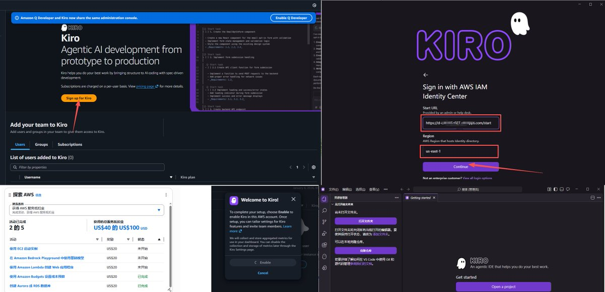
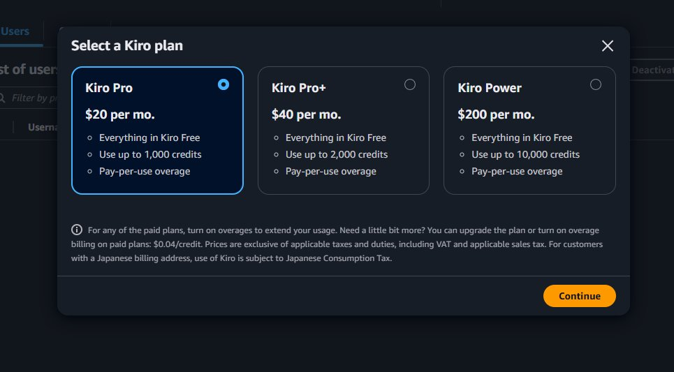

发现Kiro的一个“邪修”。如果你有1刀卡过验证，可以去申请AWS免费试用。
赠金是100USD+100USD（普通开发者做任务），一共是200USD半年有效。设置完AWS账户后，到IAM Identity Center创建账号稍后登录Kiro用。
最贵的套餐是200刀的Kiro Power，也就是把半年有效的AWS免费赠金1个月用掉。你也可以用200$的套餐月抛用，这个看个人需求量。只是绑定的1刀卡，建议是绑虚拟卡，以免到时候扣费了，也不用担心自己被扣款😋
200$的Power套餐也可以成功订阅，明明我只有100$的免费额度。注册被封号请检查自己的ip环境以及浏览器环境。
如果变付费用户了，请再创建一个新用户。反正Wise、N26等虚拟卡一抓一大把，再不济：闲鱼！
赠金是100USD+100USD（普通开发者做任务），一共是200USD半年有效。设置完AWS账户后，到IAM Identity Center创建账号稍后登录Kiro用。
最贵的套餐是200刀的Kiro Power，也就是把半年有效的AWS免费赠金1个月用掉。你也可以用200$的套餐月抛用，这个看个人需求量。只是绑定的1刀卡，建议是绑虚拟卡，以免到时候扣费了，也不用担心自己被扣款😋
200$的Power套餐也可以成功订阅，明明我只有100$的免费额度。注册被封号请检查自己的ip环境以及浏览器环境。
如果变付费用户了，请再创建一个新用户。反正Wise、N26等虚拟卡一抓一大把，再不济：闲鱼！

